Уравнение ƒ(x,y)=0 задает кривую на плоскости xOy, т. е.
геометрическое место точек на плоскости, координаты которых
(x, y) удовлетворяют уравнению.
Прямая
Угол α — это угол поворота оси абсцисс вокруг точки пересечения с прямой AM против часовой стрелки до совпадения с прямой AM. Пусть 0 < α < 90°.
Пусть прямая AM пересекает ось ординат в верхней полуплоскости и отсекает отрезок длины b. M(x, y) — текущая точка на прямой (рис. 8).
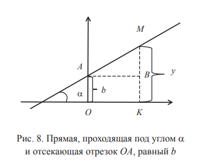
В треугольнике ABM угол ∠MAB равен α,
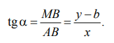
Отсюда y-b=xtgα. Обозначим k=tgα. Получим уравнение прямой:
y=kx+b. (4.1)
Здесь k — тангенс угла наклона прямой, а b — вторая координата точки пересечения прямой с осью Oy.
При b = 0 прямая проходит через начало координат (рис. 9).
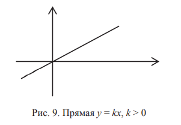
При b = 0, k > 0 прямая лежит в первой и третьей четверти.
При b = 0, k < 0 прямая лежит во второй и четвертой четверти (рис. 10).
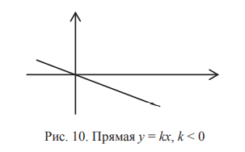
При k = 0 прямая параллельна оси Ox.
При k = 0, b = 0 прямая имеет уравнение y = 0. Это ось Ox. Пример 4.1. Определить, будут ли принадлежать прямой y=2x−3 точки M1(2, 1) и M2(−1, 5).
Подставим координаты точки M1 в уравнение. Получим 1=4−3, т. е. M1 принадлежит прямой. Подставим координаты точки M2 в уравнение. Получим 5≠−2− 3, т. е. M2 не принадлежит прямой.
Пример 4.2. Написать уравнение прямой, проходящей под углом 45° и отсекающей на отрицательной полуоси ординат Oy отрезок длины 4.
Приведем таблицу значений тангенса.
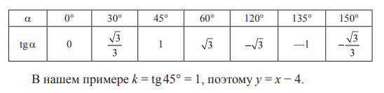
Уравнение прямой, проходящей через заданную точку под заданным углом
Задана точка M0(x0,y0) и угол α.
Тогда k = tgα. В уравнении y=kx+b коэффициент b не известен. Точка M0(x0,y0) принадлежит прямой. Поэтому y0=kx0+b Получили два уравнения:
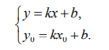
Вычтем из первого второе. Получим
y-y0=k(x-x0) (4.2)
Уравнение прямой, проходящей через две точки
Заданы точки M1(x1,y1), через которые проходит искомая прямая.
В уравнении y=kx+b коэффициенты k и b не известны. Точка M1(x1,y1) принадлежит прямой. Поэтому, согласно (4.2), y-y1=k(x-x1). Точка M2(x2,y2) принадлежит этой прямой. Поэтому ее координаты удовлетворяют уравнению. Итак,
y2-y1=k(x2-x1).
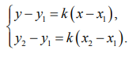
Пусть y2≠y1 и x2≠x1. Тогда можно поделить верхнее уравнение на нижнее. Получим уравнение прямой, проходящей через точки M1 и M2.
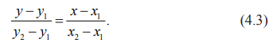
Поменяем местами левую и правую часть в формуле (4.3). Получим более удобную формулу:
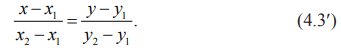
Если y2=y1, а x2=x1, то прямая M1M2 горизонтальна (рис. 11) и ее уравнение y=y1.
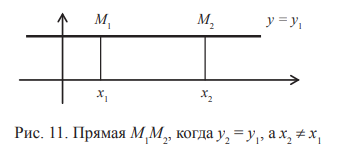
Если x2=x1, а y2≠y1, то прямая M1M2 вертикальна и ее уравнение x=x1.
Пример 4.3. Заданы точки M1(1, 3) и M2(2, 1). Записать уравнение прямой. Найти k, b.Подставим наши данные в формулу (4.3′):
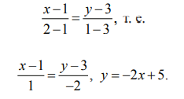
Уравнение прямой в отрезках на осях
Пусть известно, что прямая отсекает на оси Ox отрезок a, а на оси Oy отрезок b. Записать уравнение прямой. Искомая прямая проходит через M1(a, 0) и M2(0, b). Из (4.3)
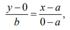
отсюда
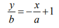
и, наконец,
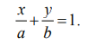
Пример 4.4. Найти уравнение прямой, проходящей через точку M1(−1, 2) и отсекающей на осях отрезки равной длины. Через точку M1 проходят две прямые, отсекающие на осях отрезки равной длины. Обозначим за a длину отсекаемого отрезка. В случае 1, изображенном на рис. 12, получим уравнение
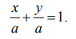
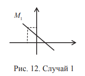
Подставим в него координаты точки M1.
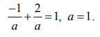
Искомая прямая y=−x+1.
В случае 2, изображенном на рис. 13, уравнение имеет вид
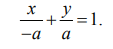
Подставив в него координаты точки M1, получим
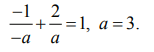
Искомая прямая y=x+3.
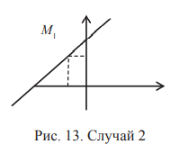
Общее уравнение прямой
Ax+By+C=0, где A2+B2≠ 0. (4.4)
При B≠0 поделим (4.4) на B и получим уравнение (4.1), где
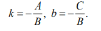
При B=0 получим уравнение вертикальной прямой
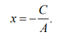
Угол между прямыми
Заданы прямые 1 и 2 (рис. 14). ∠γ — это угол поворота первой прямой против часовой стрелки до совпадения со второй прямой.
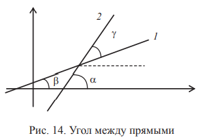
Очевидно, ∠γ = ∠α − ∠β.
Известна такая тригонометрическая формула:
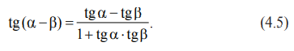
Пусть уравнение первой прямой y=k1x+b1, уравнение второй прямой y=k2x+b2. Тогда tgα=k2, tgβ=k1. Используем тригонометрическую формулу (4.5). Тангенс угла между прямыми отыскивается так:
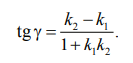
Далее рассмотрим условия параллельности и перпендикулярности двух прямых.
Условие параллельности двух прямых
Так как прямые параллельны, угол γ равен 0. Поэтому
k2=k1
Условие перпендикулярности двух прямых Угол γ равен 90°.
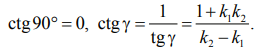
Поэтому
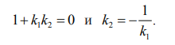
Пример 4.5. Найти уравнение прямой, параллельной прямой y=−2x+1 и проходящей через точку M1(−1, 5).
k2=k-2, y=-2x+b2
Подставим координаты M1 в уравнение.
5=-2(-1)+b2, b2=3.
Искомое уравнение
y=-2x+3
Пример 4.6. Найти уравнение прямой, перпендикулярной прямой y=−2x+1 и проходящей через точку M1(−4, 5).
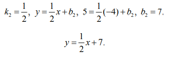
Расстояние от точки до прямой
Дана точка M0(x0,y0) и прямая Ax+By+C=0 (рис. 15).
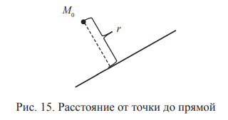
Расстояние r от точки M0 до прямой AX+By+C=0 определяется по формуле
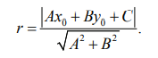
Пример 4.7. Найти расстояние от точки M0(−2, 5) до прямой y=3x+1.
Чтобы записать уравнение прямой в общем виде (4.4), перенесем все слагаемые в правую сторону.
3x-y+1=0, A=3, B=-1, C=1.
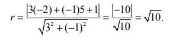
Кривые второго порядка
Окружность
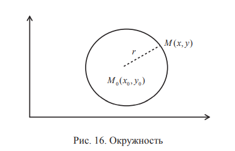
M(x,y)-произвольная точка окружности. Расстояние от M до M0равно:
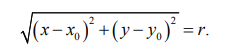
Отсюда, возведя обе части равенства в квадрат, получим уравнение окружности:
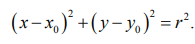
Эллипс
F1,F2— фокусы, OF1— фокусное расстояние, OF1=c, MF1+MF2=2a,F1,F2— расстояние между фокусами, F1F2=2c. A,B,A',B'— вершины эллипса, OA — большая полуось эллипса, OB — малая полуось эллипса, OA=a, OB=b, где
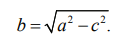
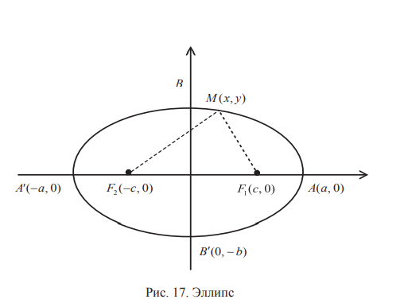
Выпишем каноническое уравнение эллипса:
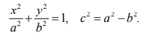
Пример 4.8. Записать уравнение эллипса, если расстояние между фокусами 6, а малая полуось 4.
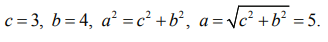
Уравнение эллипса:
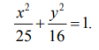
Гипербола
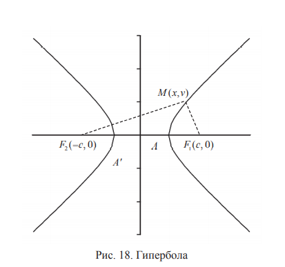
Точки F1,F2— фокусы, OF1 — фокусное расстояние, OF1=c, |MF1-MF2|=2a. Точки A,A' называют вершинами гиперболы, OA=a,AA'— действительная ось гиперболы.
выпишем каноническое уравнение гиперболы:

Асимптоты гиперболы, т. е. прямые, к которым графики гиперболы приближаются при x→∞, имеют уравнения
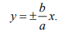
Пример 4.9. дано уравнение
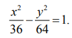
найти фокусное расстояние и асимптоты гиперболы.
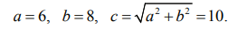
Фокусное расстояние равно 10. Асимптоты гиперболы имеют уравнения
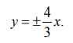
Парабола
Здесь KP — директриса, F — фокус, M — произвольная точка параболы, для которой выполняется равенство MK=MF.
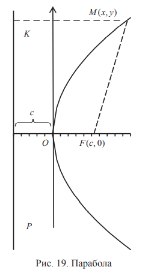
С уравнением параболы вы познакомились в школьном курсе математики.